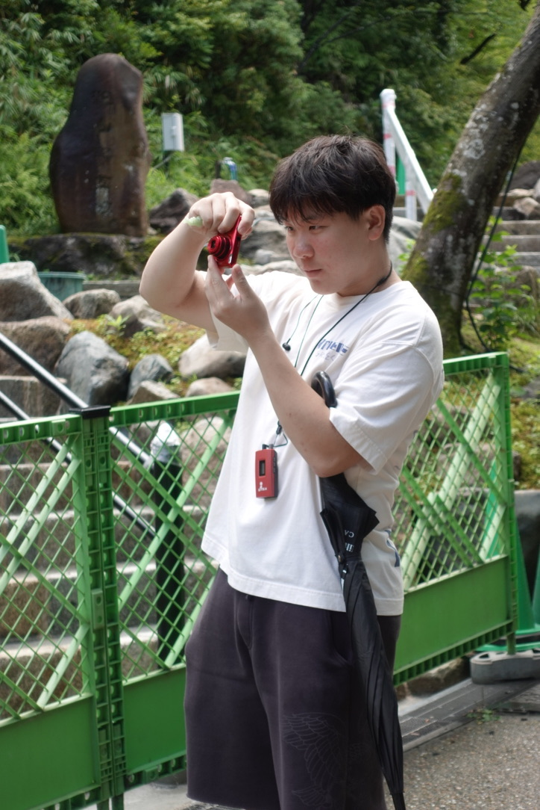
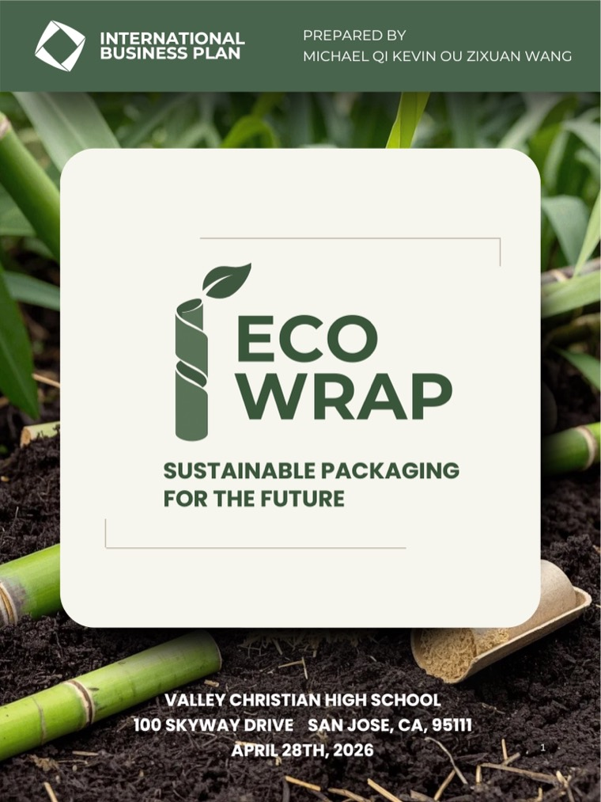
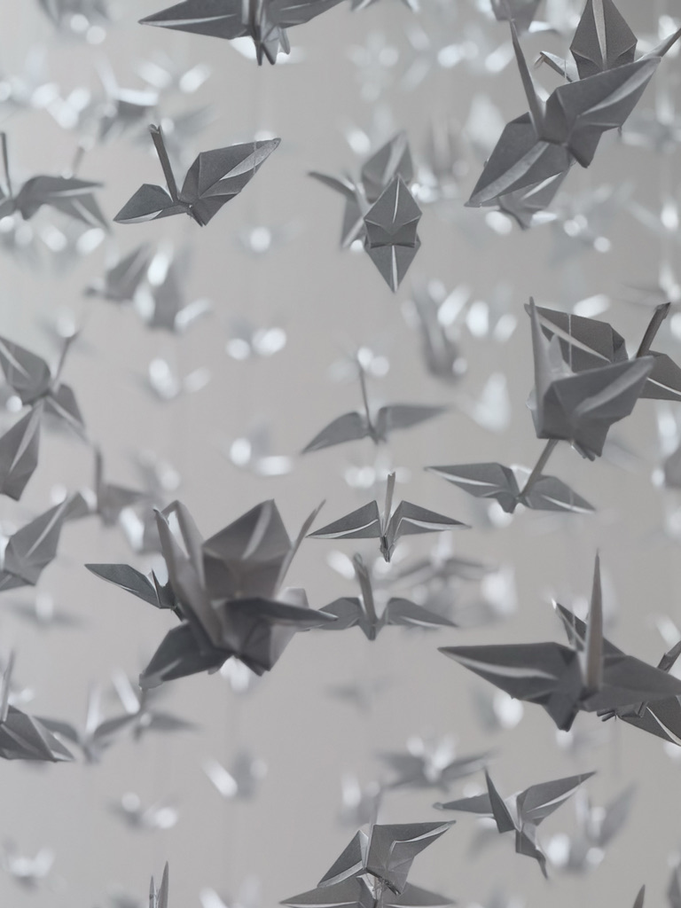
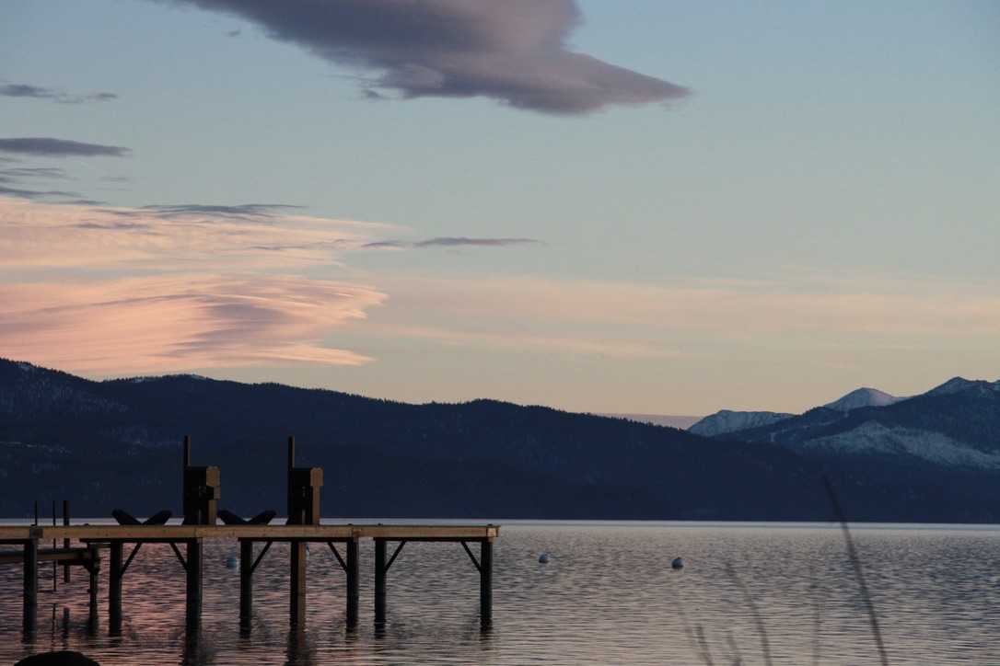
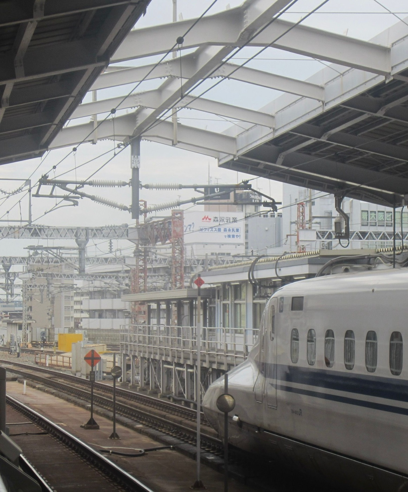
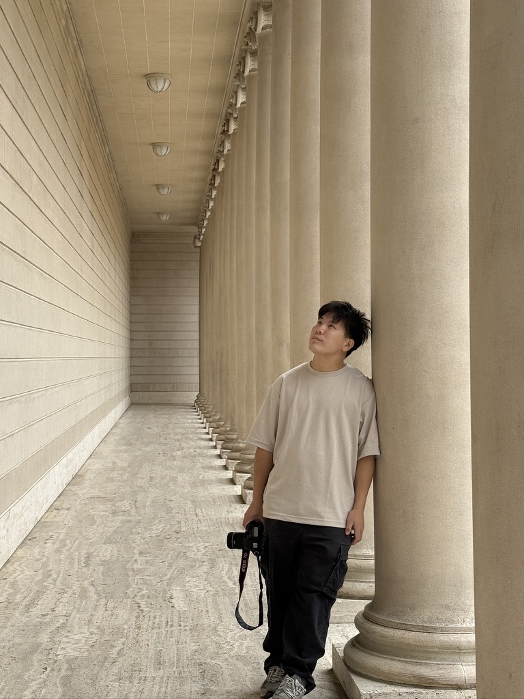
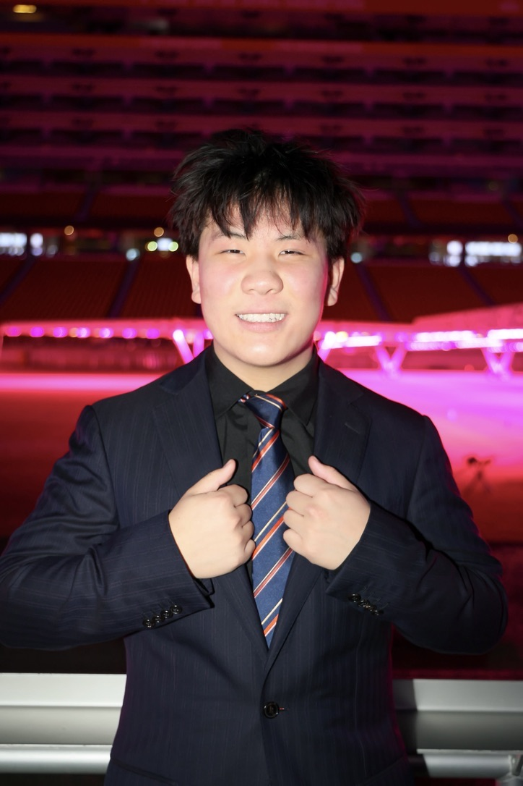

Kevin Ou
Hey, I compete in business with DECA, run a Model UN club, play percussion, take photos, and build little apps. This journal is where I keep all of it.
press the stamp at every station to collect it

- School
- Valley Christian High School
- Class of
- 2028
- GPA
- 4.71 weighted
This year's schedule
- AP U.S. History
- AP Calculus AB
- AP Computer Science A
- AP English Language
- AP Physics 1
- Photographic Design Studio Honors
already done: AP World 4 · AP Precalc 4 (self-studied)
DECA
Business plans & roleplay · since 2025
I compete in International Business Plan and roleplay events. My team of three turns one idea into a real company on paper: market research, competitors, numbers, and a pitch.
“Zero delays. Zero waste. Zero plastic.”
Eco Wrap turns sugarcane bagasse, the fiber China burns or throws away by the millions of tons, into compostable food packaging. AI-simulated molds cut custom-design lead time from about 3 weeks to 72 hours.
International Business Plan · written with Michael Qi and Zixuan Wang · April 2026

- 3rdInternational Business Plan
California DECA State Conference · qualified for ICDC - Award of ExcellenceInternational Business Plan
DECA International Career Development Conference - 1stPrinciples of Entrepreneurship Roleplay
Valley Christian Mock Conference
Now building: Solviva. It's solar-powered, pay-per-crate cold storage for small farmers in Bangladesh, and it's our 2026–27 entry.
Model UN
Co-President since 2026 · delegate since 2024
tap the placard to flip it
- StanfordStanford Model United Nations ConferenceDELEGATE
- SBMUNSouth Bay MUNDELEGATE
- SCVMUNSanta Clara Valley MUNVERBAL COMMENDATION
Music
Snare · timpani · auxiliary · guitar · bass · drums
I play percussion in the California Youth Symphony Senior Orchestra. I got in by audition, and we rehearse three hours every week.
In summer 2026 we toured Japan: four concerts in nine days across Osaka, Kyoto and Tokyo, including a joint concert with Japanese students.
click a ticket to punch it
play a little (or press S, T, A)
Soundshine: I play guitar, bass and drums with a student nonprofit band. We perform monthly at farmers markets and senior homes and raise money for families in need.
Tri City Band Corps: I was the Recruitment Officer (2025–26) for a student-run drum corps that marches in community parades.
Scouts
Troop 485 · since 2021
I was elected Senior Patrol Leader (Feb–Aug 2025). I led troop meetings, coordinated conferences and community events, and built ties with our Cub Scout pack and other troops.
Before that I was Assistant SPL, Troop Guide, Patrol Leader, Instructor and Librarian, teaching younger Scouts outdoor skills. I was also elected to the Order of the Arrow, Scouting's national honor society.
- Scout
- Tenderfoot
- Second Class
- First Class
- Star
- Life
- Eaglein progress...
Court & Canvas
Mock Trial · Canvas for Change
Mock Trial · Team Member since 2025
- Providence Cup, 2026–27
- Witness. Our team was named Rookie Team Finalist.
- County competition, 2025–26
- Bailiff.
I founded Canvas for Change (2025–26), a nonprofit offering free art programs and art-supply donation drives for students in grades 3–8. I laid the foundations of the nonprofit and led its early planning.
pick a crayon for your cursor trail:
Code
Java in AP CS A · Swift · TypeScript
things I've built (tap a receipt to print the rest)
-
A vibe-coding LARP interface that shows a fake AI code editor where code types itself, agents chat and terminals scroll while you do nothing, plus a hover-to-expand notch that only appears when you’re in other apps and plays an 8-bit chime whenever one of your real Claude chats finishes. SEE IT ON GITHUB
-
A live side panel that shows what Claude is really doing: tokens, tool calls, files touched, and usage limits. Each of my chats gets a little sprout on an island that bounces while it works, falls asleep when it's quiet, and holds up a “?” when it needs me. SEE IT ON GITHUB
-
It turns any study guide into an interactive study app: a linked map, a timeline, flashcards, and AI-checked free response. SEE IT ON GITHUB
Photos
Photographic Design Studio Honors
I'm in Photographic Design Studio Honors this year. My recent work includes the Behold project, and I'm choosing photos for a Scholastic Art & Writing Awards entry.
drag the prints around




Find me
Santa Clara, CA

Thanks for flipping through my journal. Say hi anywhere below. I'm always up for talking business, MUN, music, or whatever you're building.
Kevin
- LinkedInkevin-o-841841398
- GitHubKevinOU22
- Emailkevinouzhou@gmail.com
- Instagram@iamkevin22_
- DECA team@deca.3.skm
- Business@official.bbcproductions